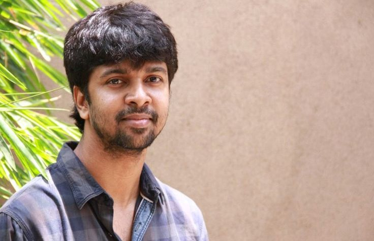

|  |
Madhan Karky, is a prominent Indian lyricist, screenwriter, and academic, known for his work in Tamil cinema. The son of legendary lyricist Vairamuthu, Madhan Karky has carved out his own niche with innovative and contemporary lyrics. He made his debut with the song "Irumbile Oru Irudhaiyam" from Enthiran (2010). Karky is noted for his ability to blend technology, modern themes, and traditional Tamil poetry in his lyrics. He is also the creator of "Tanglish" (a mix of Tamil and English) lyrics. Beyond film, he is an accomplished software engineer and academic, contributing to language computing and the development of Tamil fonts. |